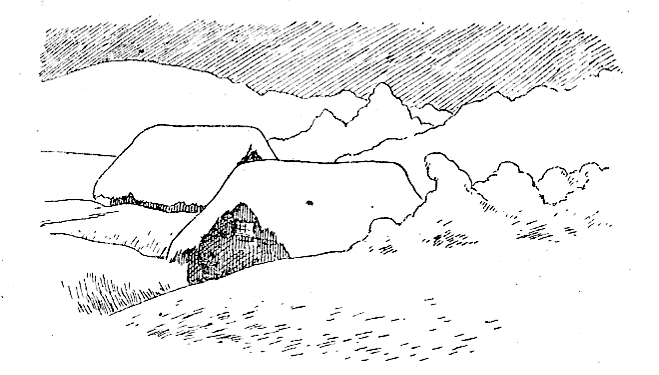
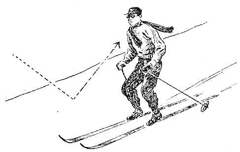
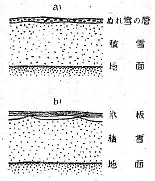
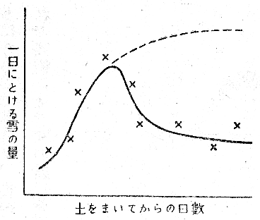
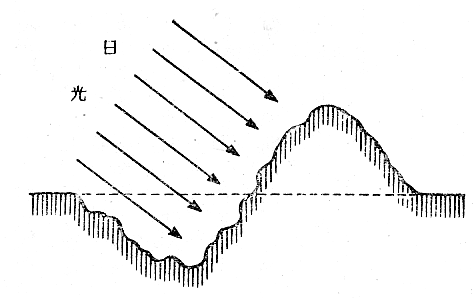

第１圖 大雪に埋れた農村
わが國には昔から「六花豐年の兆」という言葉があって、大雪の年は豐作だといって喜んだものである。しかしそれは何も科學的なよりどころのある話ではない。實際に冬の間に降った雪の量と、その年の秋の收穫とを調べてみると、大雪の年に米がたくさん穫れるというようなきまった關係は無い。
東北地方や北海道などでは、むしろその反對の場合が多いのであって、春さきになってもなかなか雪がとけない年は、
いずれにしても、東北地方や北海道のように雪の多いところでは、春さき雪の消えるのがおくれることは、農家にとって非常に困ることである。夏の短い北國では、春さきの作付は一日を爭うものである。馬鈴薯などは、朝植えたのと夕方植えたものとでは、もうちがいがあるといわれているくらいである。それはもちろん
ところが考えてみると、雪消しの問題は、單に東北や北陸、又は北海道だけのことではなく、全日本的な問題なのである。
これからの再建すべき日本は、少くも今のところ相當長い期間は、農業國として立って行くより外に道がない。アメリカ側も初めからそう言っている通りである。しかし本州四國九州北海道の四つの島で、八千五百萬人の人間が生きて行くことは、今のところでは非常にむつかしい。食糧の輸入が許されても、一千萬石買えば、一石五千圓としても五百億圓という金がいる。それもお札では駄目で、見返り物資がそれだけいる。そういうたいへんな量の物資を毎年毎年食糧だけに拂っていては、とても國家の經濟が續かないであろう。食物というものは、せっかく金をはらって輸入しても、食べてしまえばすぐ無くなってしまう。それでけっきょく今までにない大増産の道を考えるより外に方法がない。
それについていつか新聞にも、政府の方で新しく何百萬町歩とかを開墾して、一千萬石とか増收する計畫がのっていた。しかしそういう廣い良い土地が今頃まで殘されているはずがない。今殘されている土地は、北海道の山地の雪の深い土地とか、泥炭地帶とか、本州の高原地帶とかいうところであろう。いずれにしても、それ等の土地が、この人口の多いわが國で、今日まで殘されていたというのは、それが耕地とするのに適さなかったからである。
今までのわが國の農家の人たちは、非常に勤勉でよく働いた。恐らく世界で日本の農民くらい勤勞精神の強い人間はいないであろう。そういう人たちが開墾することの出來なかった、或は少くも今まで開墾しなかった土地を、農業に素人の開拓者がこれから開墾するには、勤勞精神だけでは駄目で、どうしても科學の力を取り入れる必要がある。
ところでその科學の力をどういう風にして取り入れるかという問題を吟味するために、それ等の土地が何故開墾に適しないかを考えてみよう。北海道の泥炭地よりも、本州の高原地帶の方がまだ有望であって、一千米の高臺までの耕作が出來れば、一千萬石くらいの不足は十分補えるそうである。それがもし今までの平地の耕作地通りに行ったら、もっとずっと増收になるはずで、或はそれだけで食糧問題が大半片付くかもしれないということである。ところがそれ等の土地は、一般に何處も雪が多く、春さきの雪とけがおくれて、丁度いい時に作付が出來ないことと、今一つは水温が低いために、作物がよく成熟しないのである。この雪と冷水とが、これ等の土地の耕地化を邪魔する主な要素なのである。
水温の方は、太陽熱を利用して上昇させるいろいろな方法が、從來からも研究されている。その中での簡單な方法、例えば水溜りを作るとか、灌漑水路を長くするとかいうような方法は、既に實施されて來ている。しかし土木費がかさむので、大規模には餘り普及していない。この水温上昇の方は外にも方法が考えられるし、又春さき雪を早く消せばかなりその補いが出來るので、けっきょく本州の高原地帶の開墾には、春さきの雪消しが第一に採り上げらるべき問題となって來るのである。そうなると、雪を消す研究は、北陸東北北海道だけの話ではなく、全國的なしかもかなり大切な問題として出て來たわけである。
雪消しの研究は、山形縣の新庄町にある農林省の雪の研究所や、その他二三の場所で、十年くらい前から大分研究されている。
いろいろな研究があるが、そのうちで比較的普及しているのは、一番簡單な方法で、春さきに雪の上に土をまいて太陽光線を吸收させて雪を早く消す方法である。
北國の春さきの日射が非常に強いものであることは、春山のスキーを一度でも味った人は、皆よく知っている通りである。一日照りつけられると、一遍に眞黒に日焦けをしてしまう。あれは空からの直接の日射と、雪の面からの反射とで、二重にやきつけられるからである。雪は白いためによく日光を反射することは、誰でも知っているが、この反射が雪を消すのには困る性質なのである。即ち毎日のように續く北國に特有な春さきのあの強い日射が、雪の面から殆んど大部分反射されるので、せっかくの太陽

第２圖
それで雪の上に土とか煤とか、何でもよい黒い粉をまいて、それで日光を吸收させようとする方法が、各地で實施されているのである。私たちがこの數年來冬毎に立てこもっていたニセコの山の山麓地帶は、北海道でも馬鈴薯の主産地の一つである。春になって山から下りて來ると、よく雪の上に土をまいている農夫たちの姿を見たものである。
二米以上もある雪の上を、土を一杯もったそりを曳いて、馬がぬかりながら難行している。その土をスコップでまいている農夫たちも、雪の中では進退がひどく不自由である。それはなかなか苦しい勞働である。單に土をまくということだけでも、廣い畑全體に實際に行うとなると、たいへんな仕事なのである。
それだけの苦勞をして、けっきょく雪は平均して六日か七日早く消えるそうである。しかしこの六日か七日が馬鹿には出來ないので、それだけでも馬鈴薯などは一割も二割も増收になると農家の人たちは言っている。もっとも同じ土地で、一方は雪を早く消し、一方は消さないでおいて、同じ肥料を施し、同じ手入れをして比較したのではないので、科學的な意味はないが、相當増收になることは確かである。
それでもし六日や七日で滿足せず、二週間くらいも早く雪を消すことが出來れば、それは寒地農業に劃期的な進歩をもたらすことになるであろう。
北國の春さきの日射がそれほど強いものならば、土をまいてその日射を吸收させれば、六日や七日でなく、もっと早く消えそうなものである。しかしそれにはいろいろな理由があるのであって、この從來の手で土をまく方法は、もっと詳しく科學的に研究してみる必要のある問題である。
三月の下旬になって、雪が降り止むのを待って、土をまくのであるが、その頃はまだ夜になると、氣温が零度以下に降ることがしばしばある。それでこういうことがまず考えられる。晝の間は土が日光を吸收するので、積雪の表面はとける。その水がとけ切らない雪とまじって、第三圖の上の圖に示したように、表面に

第３圖
ところが雪は表面からばかりでなく、地面からも地熱を受けて自然沈下をする。その自然沈下に幾分の不同があるので、氷の板と積雪上面との間には、狹い空氣の隙き間が出來やすい。丁度第三圖の下の圖に示したような恰好になる場合が多いであろう。こういう空氣の隙き間が出來ると、その空氣の層は熱を傳えにくいので、下の方の積雪のとけ方が遲くなると考えられる。實際は表面の氷の板が次の日融けて又凍るというようなことをくりかえし、又氷の板自身もこの圖のように一枚の氷の板になるわけではないので、現象はもちろんもっとずっと複雜である。しかし大筋のところ、こういうことを一應は考えてみる必要がある。

第４圖
こういう考えがほんとうならば、土をまいてから二三日した頃が一番よく雪がとけて、その後は餘りとけなくなるであろう。その研究は越後の十日町にある森林治水試驗地で、高橋喜平氏が行ったのであるが、その結果はやはり初めのうちは土の效き目が多いが、日がたつにつれてだんだん效き目が少くなることが分った。一日に雪が何糎とけたかという量を毎日測り、それを土をまいた日から算えて、毎日グラフに描いてみると、第四圖のようになる。これは實測ではなく、説明のために大體の模樣をモデル的に描いたものである。實際はもっと點が散らばり、曲線は凸凹しているが、大體の傾向はこのようになる。即ち土をまいた效果は、初め四五日のうちが一番よくきいて、後はその效き目が減って來るのである。もし同圖に點線で描いたようになると、たいへん早く消えることになるのであるが、從來の方法で雪の上に土をまいただけでは、そうはならないのである。それで高橋氏は、別の新しい雪消し法を考えて、それを試驗してみたのである。

第５圖
四月頃の太陽は大分高くはなるが、まだちょっと低いので、光線は雪面に斜めに射す。そのことが反射を強くする一つの原因であると考えられる。もし日光が雪の面に直角に當ったならば、もっとよく吸收されるであろう。光線が吸收されれば、それだけ雪が早く消えることになるであらうと、まず考えた。
それで日光を雪の面に直角に當てるために、雪の畝を作ることを考えたのである。そのために雪の面に溝を掘り、その掘り上げた雪を溝の片側に積み上げることにした。そうすると積雪の表面に高い畝が一本出來ることになる。この畝を東西に通しておくと、畝の南側には、太陽の光線がだいたい直角に當るわけである。それだけでも效果があるはずであるが、何といっても日光は黒いものによく吸收されるので、この畝を作った上に更に土をまいておく。そうするとたいへん早く雪が消えるのである。こういう畝を澤山竝行に畑一杯に作って試驗してみた結果は、非常に好成績で、二週間も早く雪が消えたそうである。
この試驗は昭和二十年の春さきに、越後の十日町で行ったものである。十日町といえば、雪で名高い越後の中でも、特に雪の多いところである。其處の試驗で二週間も早く雪が消えたのであるから、この研究は今後もっとその實用化の研究にまで發展させる必要がある。そして大いに食糧の増産をしたいものである。
二週間早く雪が消えれば大問題であって、北海道の馬鈴薯などは、二倍近くもの増産になるだろうと、農家の人たちは言っている。それほどでなくても、きっと素晴らしい成績があがることであろう。馬鈴薯ばかりでなく、春蒔の小麥でも、燕麥でも、殆んど大抵の物は、増産になるであろう。
唯問題はこういう畝を畑一面に作ることが、普通の勞働力しかない一般の農家に出來るかどうかということである。ほんとうはそれが一番の大問題なのである。高橋氏の場合は、これは實驗であるから、狹い面積について試驗したので、畝を作るのは人力によった。しかし何町歩という廣い面積になると、とても人間の力でやるわけには行かない。どうしても器械を使う必要がある。
それでこの研究は、これからはそういう器械の製作という點に向くわけである。それが出來るか否かは、金と時間との問題で、原理が分っている以上、やれば出來るにきまっていることである。ただ相當骨が折れることにはちがいない。例えば、馬を使う場合ならば、何か巧い雪上プラウか何かを作って、それで一遍雪の上を通れば、雪が掘れて一方に掘り返されるようにすれば、希望する畝が出來るはずである。但しそういうプラウを作るには、雪の力學的性質をよく調べておく必要がある。雪の力學的性質は從來からもいろいろ研究されているが、まだ實際に役に立つまでには、その研究は完成されていない。深い雪の上に馬を通すには、馬用のかんじきを作ってやる必要があるかもしれない。これも一應は出來ている物があるが、まだまだ改良の餘地があるらしい。更に廣い面積について雪を消す場合だと、どうしても雪上トラクターを使う必要がある。そういうトラクターは外國でも、亦試驗的には我が國でも出來ているので、それを巧く應用して實用化することは必ずしも出來ない問題ではない。しかし相當困難で骨の折れる問題であることはもちろんである。そういう意味では、雪を消す話は、今までのところは手がかりが得られたという程度であって、ほんとうの研究はこれからなのである。
トラクターを使って雪を消すなどというと、たいへんなことのように考えられるかもしれないが、陸軍で持っていた戰車の十分の一もあれば、多分間に合うであろう。食糧の増産は我が國の死活の問題であるから、それくらいのことは、してもいいであろう。
雪を消す話は、こういう風に考えてみると、國家的の大問題である。戰爭中もそういう研究を、こつこつとやっていた人があったおかげて、やっとこの問題が、少くも手がかりが得られていたことは仕合せである。
あの廣い畑の雪を掘り上げたりしてはたいへんだ、何かもっと巧い方法で、資材も勞力も使はないで、簡單に雪が消せれば有難いのだがなどと言ってはいけないのである。科學というものは、そういうお呪いのようなものではないのである。
（二一、一、七）
附記 この研究を實際にやってみた結果及びその後の研究の發展の樣子は、第二部の『續雪を消す話』にかいてある。雪の畝の效き目は初めに思ったほど大きくはなく、又太陽の光線が直角にさすか斜めにさすかというちがいよりも、畝を作る時に雪がたくさんのかたまりにこわれることが雪消しにいいということが分った。しかし研究というものは初めに簡單に考えたようには決して行かないもので、初めの考えをだんだんかえて進歩させて行くことが研究なのである。そういう意味でこの話をこの本にのせておいた。
（二三、二、一〇）